전기기능장 (2015-07-19 기출문제)
1과목: 임의구분
1. 내부저항이 15kΩ이고 최대 눈금이 150V인 전압계와 내부저항이 10kΩ이고 최대 눈금이 150V인 전압계가 있다. 두 전압계를 직렬 접속하여 측정하면 최대 몇 V 까지 측정할 수 있는가?
- 300
- 250
- 200
- 150
(정답률: 76%)

2. 논리식
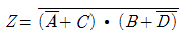
를 간소화 하면?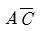
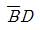
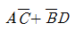
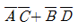
(정답률: 84%)
3. 공기 중에서 일정한 거리를 두고 있는 두 점전하 사이에 작용하는 힘이 20N이었는데, 두 전하 사이에 비유전율이 4인 유리를 채웠다. 이 때 작용하는 힘은 어떻게 되는 가?
- 작용하는 힘은 변하지 않는다.
- 0N으로 작용하는 힘이 사라진다.
- 5N으로 힘이 감소되었다.
- 40N으로 힘이 두 배 증가하였다.
(정답률: 88%)
4. 그림과 같은 기본회로의 논리동작은?
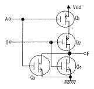
- NAND 게이트
- NOR 게이트
- AND 게이트
- OR 게이트
(정답률: 75%)
5. 그림과 같은 혼합브리지 회로의 부하로 R=8.4Ω의 저항이 직렬로 접속되었다. 평활 리액턴스 L을 ∞로 가정할 때 직류 출력전압의 평균값 Vd는 약 몇 V인가? (단, 전원전압의 실효값 V=100V, 점호각 α=30°로 한다.)
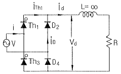
- 22.5
- 66.0
- 67.5
- 84.0
(정답률: 51%)
6. 22.9kV 배전선로에서 Al 전선을 접속할 때 장력이 가해지는 직선개소에서의 접속방법으로 옳은 것은?
- 조임 클램프 사용접속
- 활선 클램프 사용접속
- 보수 슬리브 사용접속
- 압축 슬리브 사용접속
(정답률: 82%)
7. 10kVA, 2000/100V 변압기에서 1차로 환산한 등가 임피던스가 6.2+j7Ω 이다. 이 변압기의 % 리액턴스 강하는?
- 0.18
- 0.35
- 1.75
- 3.5
(정답률: 62%)
8. 전부하에서 2차 전압이 120V이고 전압 변동률이 2%인 단상변압기가 있다. 1차 전압은 몇 V인가? (단, 1차 권선과 2차 권선의 권수비는 20:1 이다.)
- 1224
- 2448
- 2888
- 3142
(정답률: 78%)
9. 동기 발전기의 무부하 포화곡선에서 횡축은 무엇을 나타내는가?
- 계자 전류
- 전기자 전류
- 전기자 전압
- 자계의 세기
(정답률: 74%)
10. R=8Ω, XL=10Ω, XC=20Ω이 병렬로 접속된 회로에 240V의 교류전압을 가하면 전원에 흐르는 전류는 약 몇 A인가?
- 18
- 24
- 32
- 46
(정답률: 57%)
11. 다음 중 계통에 연결되어 운전 중인 변류기를 점검할 때 2차 측을 단락하는 이유는?
- 측정오차 방지
- 2차 측의 절연보호
- 1차 측의 과전류 방지
- 2차 측의 과전류 방지
(정답률: 86%)
12. J-K FF에서 현재상태의 출력 Qn을 0으로 하고, J입력에 0, K입력에 1, 클럭펄스 C.P에
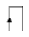
(rising edge)의 신호를 가하게 되면 다음 상태의 출력 Qn+1은?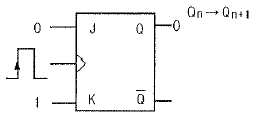
- X
- 0
- 1
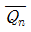
(정답률: 60%)
13. Memory cell이 flip-flop으로 되어 있는 것은?
- PROM
- EPROM
- SRAM
- DRAM
(정답률: 48%)
14. 단상 배전선로에서 그 인출구 전압은 6600V로 일정하고 한 선의 저항은 15Ω, 한 선의 리액턴스는 12Ω이며, 주상변압기 1차측 환산 저항은 20Ω, 리액턴스는 35Ω이다. 만약 주상변압기 2차측에서 단락이 생기면 이 때의 전류는약 몇 A인가? (단, 주상변압기의 전압비는 6600/220V이다.)
- 2575
- 2560
- 2555
- 2540
(정답률: 59%)
15. 직접 콘크리트에 매입하여 시설하거나 전용의 불연성또는 난연성 덕트에 넣어야 만 시공할 수 는 전선관은?
- CD관
- PF관
- PF-P관
- 두께 2㎜ 합성수지관
(정답률: 89%)
16. 저항 20Ω인 전열기로 21.6kcal의 열량을 발생시키려면 5A의 전류를 약 몇 분간 흘려주면 되는가?
- 3분
- 5.7분
- 7.2분
- 18분
(정답률: 78%)
17. 어떤 전지의 외부회로에 5Ω의 저항을 접속하였더니 8A의 전류가 흘렀다. 외부회로에 5Ω대신에 15Ω의 저항을 접속하면 전류는 4A로 떨어진다. 전지의 기전력은 몇 V인가?
- 40
- 60
- 80
- 120
(정답률: 58%)
18. 다음 논리회로의 논리식으로 옳은 것은?
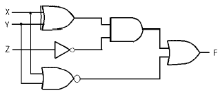
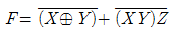
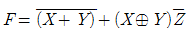
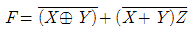
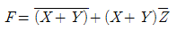
(정답률: 72%)
19. 저압옥내 배선의 라이팅덕트 시설방법으로 틀린 것은?
- 조영재를 관통하는 경우에는 충분한 보호조치를 하여 시공한다.
- 라이팅덕트 상호 및 도체 상호는 견고하고 전기적 및 기계적으로 완전하게 접속한다.
- 조영재에 부착할 경우 지지점은 매 덕트마다 2개소이상 및 지지점간의 거리는 2m 이하로 견고히 부착한다.
- 라이팅덕트에 접속하는 부분의 배선은 전선관이나 몰드 또는 케이블배선에 의하여전선이 손상을 받지 않게 시설한다.
(정답률: 64%)
20. 전류원 인버터(CSI:Current Source Inverter)와 비교할때 전압원 인버터(VSI:Voltage Source Inverter)의 장점이 아닌 것은?
- 대용량에도 적합한 방식이다.
- 용량성 부하에도 사용할 수 있다.
- 제어회로 및 이론이 비교적 간단하다.
- 유도 전동기 구동 시 속도제어 범위가 더 넓다.
(정답률: 63%)
2과목: 임의구분
21. 계자 철심에 잔류자기가 없어도 발전할 수 있는 직류기는?
- 직권기
- 복권기
- 분권기
- 타여자기
(정답률: 81%)
22. 다음과 같은 회로의 기능은?
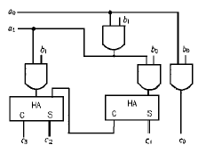
- 2진 승산기
- 2진 제산기
- 2진 감산기
- 전가산기
(정답률: 72%)
23. 실리콘정류기의 동작 시 최고 허용온도를 제한하는 가장 주된 이유는?
- 정격 순 전류의 저하 방지
- 역방향 누설전류의 감소 방지
- 브레이크 오버(break over)전압의 저하 방지
- 브레이크 오버(break over)전압의 상승 방지
(정답률: 79%)
24. 회로를 여러개 병렬로 접속하면 그 연결 개수만큼 2진수를 기억할 수 있다. 일반적으로 이와 같은 플립플롭 일정 개수를 모아서 연산이나 누계에 사용하는 플립플롭의 특수한 모임은 무엇인가?
- 게이트(Gate)
- 컨버터(Converter)
- 카운터(Counter)
- 레지스터(Register)
(정답률: 72%)
25. UPS의 기능으로서 가장 옳은 것은?
- 가변주파수 공급
- 고조파방지 및 정류평활
- 3상 전파정류 방식
- 무정전 전원공급 가능
(정답률: 94%)
26. 공사원가는 공사시공 과정에서 발생한 항목의 합계약을 말하는데 여기에 포함되지 않는 것은?
- 경비
- 재료비
- 노무비
- 일반관리비
(정답률: 91%)
27. 그림과 같이 3상 유도 전동기를 접속하고 3상 대칭 전압을 공급할 때 각 계기의 지시가 W1=2.6kW, W2=6.4kW, V=200V, A=32.19A이었다면 부하의 역률은?
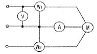
- 0.577
- 0.807
- 0.867
- 0.926
(정답률: 56%)
28. 4극 직류발전기가 전기자 도체수 600, 매극당 유효자속 0.035Wb, 회전수가 1800rpm일 때 유기되는 기전력은 몇 V인가? (단, 권선은 단중 중권이다.)(오류 신고가 접수된 문제입니다. 반드시 정답과 해설을 확인하시기 바랍니다.)
- 220
- 320
- 430
- 630
(정답률: 66%)
29. 10진수 77을 2진수로 표시한 것은?
- 1011001
- 1110111
- 1011010
- 1001101
(정답률: 68%)
30. 다음 논리함수를 간략화 하면 어떻게 되는가?
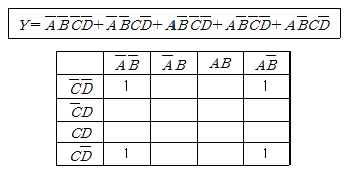
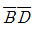
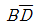
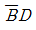
- BD
(정답률: 78%)
31. 어떤 변압기를 운전하던 중에 단락이 되었을 때 그 단락전류가 정격전류의 25배가 되었다면 이 변압기의 임피던스 강하는 몇 %인가?
- 2
- 3
- 4
- 5
(정답률: 72%)
32. 다음 중 스택이 사용되는 경우는 언제인가?
- 스풀을 실행할 때
- DMA 요구가 받아들여졌을 때
- 브랜치 명령이나 무조건 분기 명령이 실행될 대
- 인터럽트가 발생하여 서비스 프로그램의 수행이 필요할 때
(정답률: 53%)
33. 유니온 커플링의 사용 목적은?
- 금속관과 박스의 접속
- 안지름이 다른 금속관 상호의 접속
- 금속과 상호를 나사로 연결하는 접속
- 돌려 끼울 수 없는 금속관 상호의 접속
(정답률: 87%)
34. SSS의 트리거에 대한 설명 중 옳은 것은?
- 게이트에 빛을 비춘다.
- 게이트에 (+)펄스를 가한다.
- 게이트에 (-)펄스를 가한다.
- 브레이크 오버전압을 넘는 전압의 펄스를 양단자간에 가한다.
(정답률: 81%)
35. 그림과 같은 회로의 합성정전용량은?
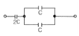
- C
- 2C
- 3C
- 4C
(정답률: 81%)
36. 기전력 1V, 내부저항 0.08Ω인 전지로, 2Ω의 저항에 10A의 전류를 흘리려고 한다. 전지 몇개를 렬접속 시켜야 하는가?
- 88
- 94
- 100
- 108
(정답률: 71%)
37. 변압기의 전부하 동손이 240W, 철손이 160W 일 때, 이 변압기를 최고 효율로 운전하는 출력은 격출력의 몇 %가 되는가?
- 60.00
- 66.67
- 81.65
- 92.25
(정답률: 59%)
38. 그림과 같은 연산 증폭기에서 입력에 구형파전압을 가했을 때 출력 파형은?
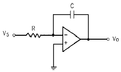
- 구형파
- 삼각파
- 정현파
- 톱니파
(정답률: 77%)
39. 전산기에서 음수를 처리하는 방법은?
- 보수표현
- 지수적 표현
- 부동 소수점 표현
- 고정 소수점 표현
(정답률: 83%)
40. 금속 전선관을 쇠톱이나 커터로 절단한 다음, 관의 단면을 다듬을 때 사용하는 공구는?
- 리머
- 홀소
- 클리퍼
- 클릭볼
(정답률: 91%)
3과목: 임의구분
41. 평형 도선에 같은 크기의 왕복 전류가 흐를 때 두 도선 사이에 작용하는 힘과 관계되는 것으로 옳은 것은?
- 전류의 제곱에 비례한다.
- 간격의 제곱에 반비례한다.
- 주위 매질의 투자율에 반비례한다.
- 간격의 제곱에 비례하고 투자율에 반비례한다.
(정답률: 63%)
42. 2중 농형 전동기가 보통농형 전동기에 비해서 다른 점은?
- 기동전류가 크고, 기동회전력도 크다.
- 기동전류가 적고, 기동회전력도 적다.
- 기동전류는 적고, 기동회전력은 크다.
- 기동전류는 크고, 기동회전력은 적다.
(정답률: 88%)
43. 동기조상기에 대한 설명으로 옳은 것은?
- 유도부하와 병렬로 접속한다.
- 부하전류의 가감으로 위상을 변화시켜 준다.
- 동기전동기에 부하를 걸고 운전하는 것이다.
- 부족여자로 운전하여 진상전류를 흐르게 한다.
(정답률: 67%)
44. 동기발전기에 회전 계자형을 사용하는 경우가 많다. 그 이유로 적합하지 않은 것은?
- 기전력의 파형을 개선한다.
- 전기자 권선은 고전압으로 결선이 복잡하다.
- 계자회로는 직류 저전압으로 소요 전력이 적다.
- 전기자보다 계자극을 회전자로 하는 것이 기계적으로 튼튼하다.
(정답률: 57%)
45. 동기전동기의 기동을 다른 전동기로 할 경우에 대한 설명으로 옳은 것은?
- 유도전동기를 사용할 경우 동기전동기의 극수보다 2극 정도 적은 것을 택한다.
- 유도전동기의 극수를 동기전동기의 극수와 같게 한다.
- 다른 동기전동기로 기동시킬 경우 2극정도 낳은 전동기를 택한다.
- 유도전동기로 기동시킬 경우 동기전동기보다 2극정도 많은 것을 택한다.
(정답률: 84%)
46. 변압기의 누설리액턴스를 줄이는 가장 효과적인 방법은?
- 권선을 동심 배치한다.
- 권선을 분할하여 조립한다.
- 코일의 단면적을 크게 한다.
- 철심의 단면적을 크게 한다.
(정답률: 85%)
47. 단상유도전동기에서 주권선과 보조권선을 전기각 2π(rad)로 배치하고 보조권선의 권수를 주권선의 1/2로 하여 인덕턴스를 적게 하여 기동하는 방식은?
- 분상기동형
- 콘덴서기동형
- 셰이딩코일형
- 권선기동형
(정답률: 67%)
48. 다음 중 상자성체는 어느 것인가?
- 알루미늄
- 니켈
- 코발트
- 철
(정답률: 85%)
49. 가공전선로의 지지물에 하중이 가해지는 경우에 그 하중을 받는 지지물의 기초 안전율은 2이상이어야 한다. 다음과 같은 경우 예외로 하고 있다. ( ) 안의 내용으로 알맞은 것은?
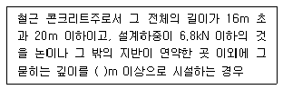
- 2.2
- 2.5
- 2.8
- 3.0
(정답률: 83%)
50. 수관을 통하여 공급되는 온천수의 온도를 올려서 수관을 통하여 욕탕에 공급하는 전극식 온수기(승온기) 차폐장치의 전극에는 제 몇 종 접지공사를 하여야 하는가?
- 제1종 접지공사
- 제2종 접지공사
- 제3종 접지공사
- 특별 제3종 접지공사
(정답률: 75%)
51. 동심구의 양도체 사이에 절연내력이 30kV/mm이고, 비유전율이 5인 절연액체를 넣으면 공기인 경우의 몇 배의 전기량이 축적되는가?
- 5
- 10
- 20
- 40
(정답률: 57%)
52. 22.9kV 가공 전선로에서 3상 4선식 선로의 직선주에 사용되는 크로스 완금의 표준길이는?
- 900㎜
- 1400㎜
- 1800㎜
- 2400㎜
(정답률: 68%)
53. 전원과 부하가 다같이 Δ결선된 3상 평형회로가 있다. 전원 전압이 200V, 부하 임피던스가 6+j8Ω인 경우 선전류는 몇 A인가?
- 10
- 20
- 10√3
- 20√3
(정답률: 64%)
54. 권선형 유도전동기의 기동 시 회전자회로에 고정저항과 가포화리액터를 병렬접속 삽입하여 기동초기 슬립이 클때 저전류 고토크로 기동하고 점차 속도상승으로 슬립이 작아져 양호한 기동이 되는 기동법은?
- 2차 저항 기동법
- 2차 임피던스 기동법
- 1차 직렬 임피던스 기동법
- 콘도르퍼(Kondorfer)기동방식
(정답률: 64%)
55. 도수분포표에서 알 수 있는 정보로 가장 거리가 먼 것은?
- 로트 분포의 모양
- 100 단위당 부적합 수
- 로트의 평균 및 표준편차
- 규격과의 비교를 통한 부적합품률의 추정
(정답률: 61%)
56. 자전거를 셀 방식으로 생산하는 공장에서, 자전거 1대당 소요공수가 14.5H 이며, 1일 8H, 월 25일 작업을 한다면 작업자 1명 당 월 생산 가능 대수는 몇 대인가? (단, 작업자의 생산종합효율은 80% 이다.)
- 10대
- 11대
- 13대
- 14대
(정답률: 80%)
57. 미리 정해진 일정단위 중에 포함된 부적합수에 의거하여 공정을 관리할 때 사용되는 관리도는?
- c관리도
- P관리도
- X관리도
- nP관리도
(정답률: 77%)
58. TPM 활동 체제 구축을 위한 5가지 기둥과 가장 거리가 먼 것은?
- 설비초기관리체제 구축 활동
- 설비효율화의 개별개선 활동
- 운전과 보전의 스킬 업 훈련 활동
- 설비경제성검토를 위한 설비투자분석 활동
(정답률: 75%)
59. ASME(American Society of Mechanical Engineers)에서 정의하고 있는 제품공정 분석표에 사용되는 기호 중“저장(Storage)"을 표현한 것은?
- ○
- □
- ▽
- ⇨
(정답률: 85%)
60. 로트에서 랜덤하게 시료를 추출하여 검사한 후 그 결과에 따라 로트의 합격, 불합격을 판정하는 검사방법을 무엇이라 하는가?
- 자주검사
- 간접검사
- 전수검사
- 샘플링검사
(정답률: 91%)